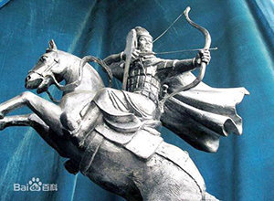

李广
李广（？－前119年），汉族，陇西成纪（今甘肃天水秦安县）人，中国西汉时期的名将。汉文帝十四年（前166年）从军击匈奴因功为中郎。景帝时，先后任北部边域七郡太守。武帝即位，召为未央宫卫尉。元光六年（前129年），任骁骑将军，领万余骑出雁门（今山西右玉南）击匈奴，因众寡悬殊负伤被俘。匈奴兵将其置卧于两马间，李广佯死，于途中趁隙跃起，奔马返回。后任右北平郡（治平刚县，今内蒙古宁城西南）太守。匈奴畏服，称之为飞将军，数年不敢来犯。元狩四年（前119年），漠北之战中，李广任前将军，因迷失道路，未能参战，愤愧自杀。
唐德宗时将李广等历史上六十四位武功卓著的名将供奉于武成王庙内，被称为武成王庙六十四将。宋徽宗时追尊李广为怀柔伯，位列宋武庙七十二将之一。李广的先祖李信是秦朝名将，曾率军击败燕太子丹。李广家族世代接受仆射这一官职。他们老家在槐里，后迁徙到成纪。李广家世代传习射箭。
公元前166年（汉文帝十四年），匈奴大举入侵萧关，李广以良家子弟的身份从军抗击匈奴，因为精通骑马射箭，斩杀匈奴首级很多，被任为汉中郎。李广曾经随从皇帝出行，有冲锋陷阵抵御敌寇和与猛兽搏斗的事，因而汉文帝说：“可惜呀，你没遇到时机，假如让你生在高祖时代，封个万户侯不在话下！”[2] 汉景帝即位后，李广任陇西都尉，又改任骑郎将。
